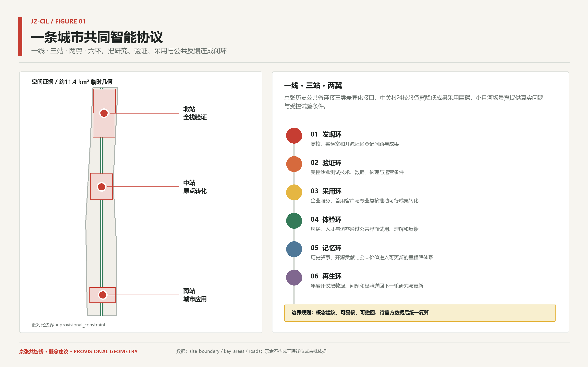
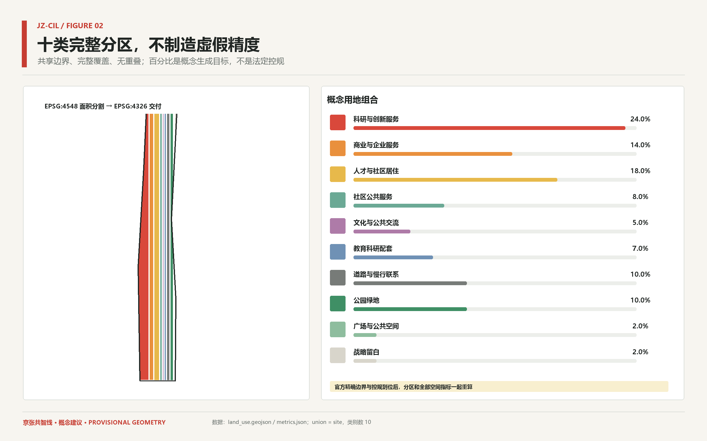
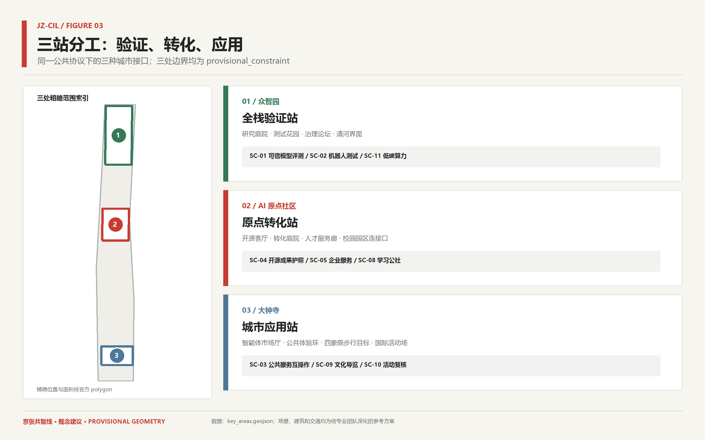
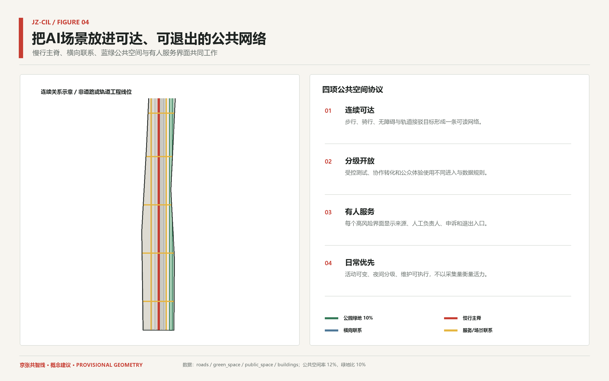
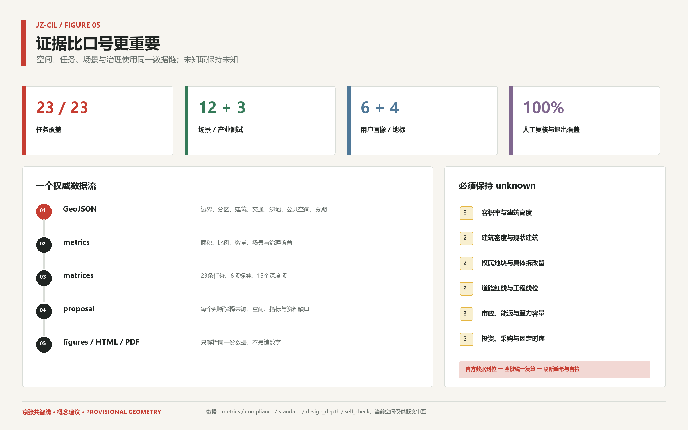

京张共智线
以一线·三站·两翼·六环把AI研究、验证、采用、公共体验与城市记忆组织成共同智能协议；总体与重点区采用provisional_constraint，官方精确边界到位后统一复算。
京张共智线
**Jing-Zhang Common Intelligence Line** **一条可验证、可参与、可生长的城市智能公共协议**
> 边界提示：本包的总体范围与三处重点区均为仓库登记的 provisional_constraint，不是官方精确空间依据。它们只用于概念生成、相对关系、可视化和入口自检；内容可审查，但所有面积、比例、建筑、交通、项目位置和图纸须在官方精确边界到位后统一复算与专业深化。
设计依据与资料清单
本方案以官方征集公告和面向智能体任务书为首要任务依据，以仓库机器可读资料包、公开资料登记表和处理资料包为导航，形成“可读判断—机器图层—复算指标—图纸页面—自检记录”的证据链。[source:OFFICIAL-ANNOUNCEMENT] 明确三层范围、三处重点区和成果要求，[source:AGENT-TASKBOOK] 补充一带总体概念、世界级AI生态、场景、公共空间、文化和长期运营六项任务；[source:SITE-PACKAGE]、[source:SOURCE-REGISTRY] 与 [source:PROCESSED-FACT-PACK] 用于识别资料权威等级、允许设计空间和缺资料事项。公开资料索引中的 brief/public-brief.md [source:PUBLIC-BRIEF-INDEX] 仅用于核对公开草案背景，不能替代前述正式任务依据。方案对应的专业依据为 [standard:PROJECT-OFFICIAL-ANNOUNCEMENT]、[standard:PROJECT-AGENT-OPEN-CALL-TASKBOOK]、[standard:MOHURD-URBAN-DESIGN-MEASURES]、[standard:MOHURD-CONTROL-DETAILED-PLANNING]、[standard:MNR-LAND-USE-CLASSIFICATION-GUIDE]、[standard:MOHURD-ARCH-DESIGN-DEPTH-2016]，现状与资料缺口由 [depth:existing_conditions_diagnosis] 记录。
当前仓库没有组织方提供的官方精确总体 polygon 和三处重点区 polygon，因此 [source:BOUNDARY-SOURCE] 与 [source:KEY-AREA-SOURCE] 仅以 provisional_constraint 进入 [data:geometry/site_boundary.geojson#SITE-001] 和 [data:geometry/key_areas.geojson#PROV-KEY-001]。临时总体几何复算约 11.413 平方公里 [metric:site_area_sqm]，该数字用于检查拓扑与相对比例，不替代公告约面积或后续附件。官方精确边界到位后，九个图层、metrics、五图、HTML和PDF按同一生成链重建，不能只替换一张边界图。

设计主题是“共同智能”，不是把技术设施贴到城市表面。百年前京张铁路把工程知识变为公共可见的现代化能力；今天的共智线把研究发现、公开验证、人工复核、产业采用、公众反馈和城市记忆组织为一条可追溯协议。每个设计动作都必须说明资料来源、空间载体、服务对象、退出条件与待深化事项；强度、权属、工程和资金信息缺失时保持未知，不由智能体补造。
总体概念与一线三站两翼六环
“京张共智线”以京张铁路遗址公园及周边公共空间为概念性公共创新脊，构成**一线·三站·两翼·六环**。一线承担连续慢行、文化叙事、AI公共体验和年度活动路径；三站分别是北部众智园“全栈验证站”、中部AI原点社区“原点转化站”和南部大钟寺“城市应用站”；两翼为中关村科技服务翼和小月河场景赋能翼。它们不是新增行政、铁路或轨道设施，而是把分散高校、园区、社区、企业和公共服务连接成差异化协作网络。[depth:overall_spatial_structure] [data:geometry/roads.geojson#ROAD-001]
六环依次为发现、验证、采用、体验、记忆和再生：研究者登记问题与成果，受控沙盒测试技术和数据边界，企业服务与专业复核推动可行成果采用，公众通过有人服务的界面理解与反馈，历史与开源贡献进入可更新的里程碑，年度评议再把问题送回研究。品牌识别用开放括号与两条平行轨迹表达历史轨道、数据流与人的判断，色彩采用暖白、炭黑、铁路信号红和公共空间绿；不使用企业Logo、人物肖像或仿品牌资产。
空间协议强调“受控研究界面—协作转化界面—公众体验界面”三级开放。核心实验和数据空间不因公众体验而任意开放，公共界面必须展示来源、置信度、更新时间、人工负责人、申诉与退出入口。由此，一线既不是景观包装，也不是技术展示走廊，而是把创新生态和公共利益连接起来的城市运行方法。
三层范围工作框架
统筹研究范围、总体设计范围和重点区域分别对应网络治理层、公共协议层与示范接口层。[depth:three_level_scope_framework] 统筹研究层以公告约43.6平方公里范围说明创新链、人才企业服务、年度活动和跨片区治理，不绘制推测边界；总体设计层以仓库临时总体 polygon 生成完整概念分区、建筑类型基底、慢行蓝绿网络、公共空间与相对分期；重点区域层以三处临时 polygon 分别提出定位、空间结构、场景、运营和深化条件。[source:OFFICIAL-ANNOUNCEMENT]
三层通过同一证据链传导：统筹策略进入23条任务响应，总体设计落入 [data:geometry/land_use.geojson#LU-001]、[data:geometry/roads.geojson#ROAD-001] 和 [data:geometry/phasing.geojson#PHASE-001]，重点区落入 [data:geometry/key_areas.geojson#PROV-KEY-001]。总体图不把 provisional_constraint 画成高对比控制线，而把共智线、三站、两翼、跨向联系、场景和公共界面作为图面主角，降低误读为审批成果的风险。
三层不是从大到小的重复图纸。网络治理层回答谁与谁协作、问题如何进入议程；公共协议层回答什么空间支持验证、转化、体验和日常生活；示范接口层回答每个重点区如何形成可测试的小方案。官方精确边界到位后，三层逻辑保持，空间几何与数量整体复算并由规划、建筑、交通、市政、景观和运营专业共同确认。
统筹研究范围产业与未来城市研究
世界级AI创新生态不等于头部企业名单或单一地标，而是研究、验证、采用、生活支持和公共信任之间有稳定接口。六个一手机制案例只做比较研究，不支撑本地法定控制、规模或资金安排：[source:CASE-TORONTO-VECTOR]、[source:CASE-MONTREAL-MILA]、[source:CASE-KENDALL-SQUARE]、[source:CASE-PARIS-SACLAY]、[source:CASE-BRAINPORT]、[source:CASE-STATION-F]。案例转化遵循“抽取机制、对照本地问题、列出不可照搬条件”的方法，并由假设 A-CASES-001 限定。
| 案例 | 可转化机制 | 本地边界 | | --- | --- | --- | | Toronto MaRS + Vector Institute [source:CASE-TORONTO-VECTOR] | 把独立研究机构、企业采用服务和城市级创新网络组合为研究到采用接口 | 用于三站共享验证协议与中关村科技服务翼，不复制机构规模 | | Montreal Mila [source:CASE-MONTREAL-MILA] | 多校研究网络、开放科学与负责任AI教育共同形成社区基础设施 | 用于AI原点社区的跨校开源客厅和责任AI学习机制 | | MIT Kendall Square [source:CASE-KENDALL-SQUARE] | 高密创新区通过混合功能、公共空间与持续社区参与缓解研究园区孤岛 | 用于原点社区和大钟寺的首层公共界面与人才生活支持 | | Paris-Saclay [source:CASE-PARIS-SACLAY] | 以跨机构协同和可持续校园连接分散的科研教育资源 | 用于三区两翼的跨片区协作治理，不以新城规模类比 | | Brainport Eindhoven [source:CASE-BRAINPORT] | 企业、高校与公共部门围绕开放创新和人才环境形成区域协作 | 用于问题开放、测试、采用和人才服务的年度闭环 | | STATION F [source:CASE-STATION-F] | 在历史工业空间中集成创业支持、社区服务和公共活动 | 用于大钟寺的智能体市场厅概念，具体建筑利用仍待权属、文保、消防和结构复核 |
对海淀的综合启示是一条连续服务链：高校和实验室产生研究与开源成果，众智园提供受控测试与责任AI培训，AI原点社区提供许可、合规、知识产权、人才和创业转化，大钟寺提供公共服务互操作、智能原生业态与国际交流，中关村服务翼降低企业采用摩擦，小月河场景翼反馈真实公共问题。该网络同时关注住房、通勤、无障碍、第三空间和国际人才服务，避免创新资源成为与社区割裂的孤岛。[standard:MOHURD-URBAN-DESIGN-MEASURES]
未来城市形态的判断是：AI设施需要分级开放、空间需要支持人工复核、场景需要可撤回、公共界面需要可解释。研究空间不以无边界开放换取传播，公共体验不以采集更多个人数据衡量成功，企业服务不把公开政策解释包装成决策替代。统筹层以年度公开问题库、跨校联合测试、首用客户接口、公共价值评议和国际传播构成长期议程，具体机构和活动仍由相关主体协商。
总体设计范围城市更新与控规深度城市设计
总体设计以十类完整概念分区回应产业、生活、公共服务、文化、教育、道路、绿地、广场和战略留白需求。[depth:land_use_layout] 通过 EPSG:4548 面积分割和共享边界生成 [data:geometry/land_use.geojson#LU-001]，十类 polygon 的 union 等于临时总体范围，避免以相互叠压的色块制造虚假精度。科研与创新服务24%、商业与企业服务14%、人才与社区居住18%、社区公共服务8%、文化5%、教育科研配套7%、道路与慢行10%、公园绿地10%、广场2%、战略留白2%是生成目标和讨论基线，不是审定用地结构。[metric:land_use_area_sqm] [metric:land_use_category_count]

城市更新采取“保留优先、低扰动适配、公共界面先行、场景小步验证”的方法。建筑基底 [data:geometry/buildings.geojson#BLDG-001] 只表达可建设概念用地中的类型关系，不判断具体楼栋；交通联系、绿地、公共空间与分期分别由 [data:geometry/roads.geojson#ROAD-001]、[data:geometry/green_space.geojson#GREEN-001]、[data:geometry/public_space.geojson#PUBLIC-001] 和 [data:geometry/phasing.geojson#PHASE-001] 派生。已知条件和临时约束集中在 [data:geometry/constraints.geojson#CONSTRAINT-001]，使设计建议与约束来源保持分层。
控规深度在本阶段体现为问题和证据结构，而非智能体给出法定数值。[depth:development_intensity_controls] 与 [standard:MOHURD-CONTROL-DETAILED-PLANNING] 要求的容积率、高度、密度、退线、道路、市政和综合承载信息均在 metrics 中保持 unknown，待官方附件、现状普查、权属与专业评估后确认。官方精确边界到位后，分区比例、建筑基底和连通长度一起重算，避免跨图件口径漂移。
重点区域详细设计
三处重点区的 provisional_constraint 仅表达相对位置、名称、南北顺序和概念接口，不代表地块边界。[depth:three_key_area_detailed_design] 众智园定位为“全栈验证站”，以研究庭院、测试花园、治理论坛和清河文化界面组织可信模型评测、低速机器人测试、低碳算力协同和责任AI学习；受控测试区与公众解释界面分开，所有测试有时段、速度、数据和停用条件。[data:geometry/key_areas.geojson#PROV-KEY-001]
AI原点社区定位为“原点转化站”，用开源客厅、转化庭院、人才服务廊和校园园区连接口支撑开源成果护照、企业服务Copilot、AI学习公社与无障碍慢行。空间更新强调混合功能、首层公共界面、低扰动适配和日常生活支持，不依据临时 polygon 指定具体楼栋。大钟寺定位为“城市应用站”，以智能体市场厅、公共体验环、四象限步行目标和国际活动场支撑公共服务互操作、文化导览、活动复核和智能原生商业试用。[data:geometry/key_areas.geojson#PROV-KEY-002] [data:geometry/key_areas.geojson#PROV-KEY-003]

三处小方案均包含定位、公共空间、建筑更新原则、慢行关系、AI场景、运营抓手和风险条件。众智园先验证技术与治理，原点社区把成果转为可服务的项目，大钟寺把成熟场景放到日常城市界面中接受公众反馈；结果再通过共智线回到研究议程。官方精确边界到位后，三处局部面积、项目位置、建筑关系和交通组织统一复算，当前重点在验证差异化机制是否完整。
AI 创新生态、人才画像与 AI+ 场景
六类用户覆盖研究者、开发者与学生、企业团队、居民与照护者、运营人员、国际人才与访客。[metric:persona_count] 每类画像同时绑定需求、空间和运营入口，避免用抽象“人才”替代真实日常。研究者需要受控测试与跨校协作，开发者需要开源贡献和学习网络，企业需要合规试验与首用接口，居民需要无障碍与可信服务，运营者需要可审计工具，国际访客需要双语导航和城市理解。
| 画像 | 核心需求 | 主要空间 | | --- | --- | --- | | P-01 基础研究者与高校教师 | 可信测试、跨校协作与研究转化 | 众智园、AI原点社区 | | P-02 开发者、学生与开源贡献者 | 开放协作、可验证贡献与学习网络 | AI原点社区、共智线 | | P-03 初创与成长企业团队 | 合规试验、企业服务与首用场景 | 三站、中关村服务翼 | | P-04 周边居民与照护者 | 无障碍出行、可信公共服务与低扰动活动 | 共智线、社区公共界面 | | P-05 园区与公共服务运营人员 | 可审计工具、人工复核与可撤回流程 | 三站运营界面 | | P-06 国际人才、访客与活动参与者 | 双语导航、城市理解与专业交流 | 大钟寺、共智线 |
十二张场景卡中恰有三张产业测试场景，其余覆盖创新服务、企业服务、公共服务、教育、文化、运营、低碳新基建和城市治理。[metric:scenario_count] [metric:industry_test_count] 每张卡明确空间锚点、用户、数据边界、人工复核和退出触发；全部场景的人工作业与退出覆盖率为100% [metric:human_review_coverage_ratio] [metric:withdrawal_coverage_ratio]。场景不以人脸识别、跨场景追踪、自动审批、自动诊断或隐蔽画像作为必要条件。
| 场景 | 类型/空间 | 数据边界 | 人工复核与退出 | | --- | --- | --- | --- | | SC-01 可信模型评测花园 | industry_test；众智园全栈验证站 | 仅使用授权测试集、合成数据与公开基准，不接入居民个人数据 | 测试方案、结果解释与公开范围由专业委员会人工复核；发现越权数据、不可解释高风险结果或安全事件即停测 | | SC-02 机器人共享测试环 | industry_test；众智园与小月河场景翼限定路段 | 只记录设备状态和去标识化环境事件，不进行跨场景个人追踪 | 交通、安全和无障碍代表共同人工批准时段、速度与路线；近失事件、无障碍冲突、异常停机或投诉阈值触发暂停 | | SC-03 公共服务智能体互操作沙盒 | industry_test；大钟寺城市应用站 | 仅使用脱敏或模拟办事数据，不连接真实审批和自动决策系统 | 公共服务、法律和无障碍人员人工复核答案与转人工路径；错误引导、歧视性结果、隐私风险或无法转人工即下线 | | SC-04 开源成果护照 | innovation_service；AI原点社区开源客厅 | 记录项目版本、许可和经本人选择公开的贡献，不建立个人敏感画像 | 贡献者主动登记，社区维护者人工确认许可与可展示范围；许可争议、身份冒用或贡献者撤回时立即隐藏记录 | | SC-05 企业服务 Copilot | enterprise_service；中关村科技服务翼 | 只解释注明版本日期的公开政策与公开服务目录，不读取企业商业秘密 | 复杂政策、法律和知识产权问题必须转人工顾问确认；来源过期、引用缺失或用户提出高风险决策请求时停止自动答复 | | SC-06 无障碍慢行助手 | public_service；共智线连续慢行网络 | 使用公开道路信息、设施清单与人工巡查，不保存个人常用路线 | 无障碍用户和巡查人员人工核验断点、坡度和临时障碍；路线与现场不符、施工变化或安全风险未复核时撤下推荐 | | SC-07 AI健康服务导航 | public_service；三站公共服务界面 | 仅查询公开医疗服务目录，不诊断、不采集病历和生物信息 | 医疗专业人员人工维护服务范围、开放时间与转诊提示；出现诊断性输出、紧急状况或服务信息过期时转人工与急救渠道 | | SC-08 AI学习公社 | education；AI原点社区学习界面 | 不进行自动招生、学生排序或隐蔽学习行为画像 | 教师、学生与社区策展人共同人工审核课程、工具和年龄适宜性；内容失实、年龄不适、偏见或版权争议触发下架 | | SC-09 京张可溯源文化导览 | culture；共智线文化叙事路径 | 仅使用可追溯公开史料与清权内容，不生成未经核实的历史叙述 | 历史、文化与版权人员人工审核每条史实和素材许可；来源无法追溯、事实争议或权利人异议时撤下内容 | | SC-10 活动安全与无障碍复核助手 | operations；大钟寺与共智线活动节点 | 只处理活动方案、公开场地条件与人工巡查清单，不做参与者身份识别 | 安全、消防、交通和无障碍负责人对清单逐项人工签核；任何法定审批未完成、现场条件变化或风险项未闭环即停止建议 | | SC-11 低碳算力协同看板 | infrastructure；众智园公共展示界面 | 仅展示经运营方确认的聚合能耗与利用率，不披露企业任务和设备敏感信息 | 能源、算力和运维人员人工确认指标口径、时间范围与异常解释；口径变化、数据异常或保密边界不明确时暂停发布 | | SC-12 公共空间共创议事台 | civic_governance；三站公共议事界面 | 意见可匿名、可撤回，不以自动聚类结果代表民意或识别个人立场 | 社区联络人与专业团队人工公开议题、异议和采纳理由；骚扰、隐私暴露、代表性误导或无法提供申诉渠道时暂停功能 |
公共地标不是大型科技雕塑，而是可维护的公共接口：京张时间站、开源里程碑墙、共智试验台和全球开发者会合点共四类 [metric:landmark_count]。它们分别承载历史、贡献、体验和协作，采用模块化、无障碍和可更新原则；具体材料、结构、基础、位置与产权须由专业团队深化。
| 地标原型 | 公共角色 | | --- | --- | | LM-01 京张时间站 | 把自主工程、中关村创新与AI公共史组织为可更新的时间界面 | | LM-02 开源里程碑墙 | 记录经审核的开源贡献、公共问题与实际改进 | | LM-03 共智试验台 | 提供可理解、可退出且有人服务的AI体验与反馈入口 | | LM-04 全球开发者会合点 | 承载跨校协作、年度活动与国际交流的可变公共组件 |
用地、建筑规模与拆改留方案
用地分类参考 [standard:MNR-LAND-USE-CLASSIFICATION-GUIDE]，但当前颜色和代码只为机器可读的概念分区，不替代现行国土空间规划或控规。十类目标如下，实际 known 面积均由 GeoJSON 复算；用地边界共享、完整覆盖临时范围且无相互重叠。[data:geometry/land_use.geojson#LU-001]
| 类型 | 概念占比 | 表达边界 | | --- | --- | --- | | 科研与创新服务 | 24% | 完整分区中的设计建议；以官方条件复核 | | 商业与企业服务 | 14% | 完整分区中的设计建议；以官方条件复核 | | 人才与社区居住 | 18% | 完整分区中的设计建议；以官方条件复核 | | 社区公共服务 | 8% | 完整分区中的设计建议；以官方条件复核 | | 文化与公共交流 | 5% | 完整分区中的设计建议；以官方条件复核 | | 教育科研配套 | 7% | 完整分区中的设计建议；以官方条件复核 | | 道路与慢行联系 | 10% | 完整分区中的设计建议；以官方条件复核 | | 公园绿地 | 10% | 完整分区中的设计建议；以官方条件复核 | | 广场与公共空间 | 2% | 完整分区中的设计建议；以官方条件复核 | | 战略留白 | 2% | 完整分区中的设计建议；以官方条件复核 |
建筑策略遵循“查证后分类、保留优先、可逆适配、首层公共性、低碳再利用”。[depth:retain_renovate_demolish] 在缺少现状建筑、权属、结构、消防、文保和租赁信息时，geometry/buildings.geojson 只生成六类概念基底，以帮助检查空间承载与公共界面，不给出具体楼栋保留、改造或新建判断。[metric:building_footprint_area_sqm] 该面积是设计基底的模型输出，不是现状建筑统计或批准规模。
高度、体量和风貌由 [depth:height_massing_character] 与 [standard:MOHURD-ARCH-DESIGN-DEPTH-2016] 组织深化问题：沿历史公共脊保持连续但不过度同质化的街道界面，重点区以院落、共享首层和可变空间支持研究与协作，重要视线、日照、风环境、消防、结构和天际线须专项复核。开发强度、建筑密度和最高高度保持 unknown，避免临时边界和概念基底被误读为控制指标。
交通、轨道、市政与公共服务设施
交通策略以连续步行骑行、无障碍、轨道接驳目标和横向公共联系为主，不提出轨道增设、道路红线、桥隧或信号工程方案。[depth:traffic_rail_slow_parking] geometry/roads.geojson 包含一条共智线慢行主脊、两侧服务/场景联系和多条横向公共联系，总概念长度由 [metric:concept_mobility_length_m] 复算。它们表达需要被解决的连接关系，具体线位需交通调查、产权核实、无障碍审查和工程可行性研究。[data:geometry/roads.geojson#ROAD-001]

市政与新型基础设施采用“需求先行、分级部署、可维护、低碳和隐私最小化”。[depth:municipal_new_infrastructure] 众智园可研究受控算力测试和聚合能耗看板，原点社区可研究共享网络与开源协作设施，大钟寺可研究公共服务互操作接口；任何算力、能源、通信、给排水、环卫和应急容量判断必须基于专业现状数据。utility_capacity_index 保持 unknown，场景不能以新增传感器数量代表城市智能水平。
公共服务设施通过“数字入口+人工柜台+无障碍替代路径”组织。健康导航不诊断，企业Copilot不替代法律或政策判断，活动复核助手不替代安全责任人；当来源过期、现场条件变化或高风险问题出现时，系统必须转人工或停用。停车、非机动车秩序、装卸和活动日交通由后续调查建立基线，不在当前临时范围上给出伪精确数量。
蓝绿空间、公共空间与城市风貌
蓝绿与公共空间系统以京张历史脊为连续公共底盘。[depth:blue_green_public_space] 公园绿地来自十类完整分区中的10%概念目标 [data:geometry/green_space.geojson#GREEN-001]，公共空间把公园绿地与2%广场类型合并为可达、可停留、可解释的公共网络 [data:geometry/public_space.geojson#PUBLIC-001]。复算绿地面积、公共空间面积、绿地比和公共空间比分别回链 [metric:green_space_area_sqm]、[metric:public_space_area_sqm]、[metric:green_ratio] 和 [metric:public_space_ratio]；这些是临时几何内的设计比例，不是法定绿地率。
公共空间按“日常优先、活动可变、测试受控、夜间分级”运行。三站设置有人服务的共智试验台与意见入口，横向联系补足片区与历史脊之间的可见连接，无障碍路线、休息点、照明、遮荫、雨洪和维护是后续深化的基本检查项。测试节点必须给出边界、时间、责任人和退出方式，不能让公共空间成为无提示的数据采集场。
文化主线是“自主建造—开放创新—共同智能”：京张铁路代表自主工程与公共连接，中关村代表知识转化和试验精神，AI新文化强调可验证、可复核、可共享与以人为本。导视以铁路里程、开放括号和证据标签为语法；临时边界使用细虚线和醒目标识，设计主线与公共节点高对比，避免把历史文化变成科技装饰或广告背景。
更新项目清单、实施政策与分期计划
更新以“机制先行、空间跟进、可撤回试点、证据累积”排序。[depth:renewal_project_list] 第一组项目是数据与治理基础：公开问题库、来源登记、场景卡模板、人工复核协议和年度自检；第二组是低扰动公共空间：连续慢行断点、无障碍巡查、三站公共界面与可移动地标原型；第三组是受控场景：三项产业测试和企业/公共服务原型；第四组是在官方条件齐备后由专业团队深化的建筑、市政与重点区综合实施方案。每个阶段同步登记参与主体、试点数量、问题关闭比例、人工复核时长、无障碍反馈和退出事件，形成可衡量的评估指标，而不以曝光量或数据采集量代替公共价值。
相对分期由 [data:geometry/phasing.geojson#PHASE-001] 表达：北中段先建立验证与转化机制，南段随后扩展城市应用与全线运营；这不是固定工期或建设承诺。[depth:phasing_implementation] 四季运营循环为春季问题开放、夏季限定测试、秋季全球Agent共创周、冬季公共价值评议与里程碑更新，活动名称、日期、场地和主办关系均需协商。六个角色是议题维护者、数据管理员、场景运营者、专业复核者、社区联络人和版权负责人。
政策建议集中于可操作的规则：建立可追溯来源登记、场景分级与退出协议；对公共服务保留人工和无障碍替代路径；把开源许可、隐私、网络安全、消防、交通和版权审查前置；用小规模、限时、可回滚试点换取证据；每轮公开问题、风险、未达成项与修复结果。具体审批、采购、财政、土地和建设程序由有权主体依法推进，本方案不替代这些程序。
指标体系、面积复算与合规矩阵
指标分为三类：从当前结构化数据可复算的 known 指标、受临时几何限制的中低置信指标、缺少官方或专业资料而保持 unknown 的控制指标。[depth:metrics_recalculation] 所有 known 指标必须在 proposal、GeoJSON、metrics、图件、HTML和PDF之间保持同值；每次任何源图层变化都重跑完整生成链。指标引用索引为：[metric:site_area_sqm]、[metric:land_use_area_sqm]、[metric:building_footprint_area_sqm]、[metric:green_space_area_sqm]、[metric:public_space_area_sqm]、[metric:green_ratio]、[metric:public_space_ratio]、[metric:concept_mobility_length_m]、[metric:key_area_count]、[metric:land_use_category_count]、[metric:scenario_count]、[metric:industry_test_count]、[metric:persona_count]、[metric:landmark_count]、[metric:requirement_coverage_count]、[metric:human_review_coverage_ratio]、[metric:withdrawal_coverage_ratio]。
| 指标 | 状态 | 值/说明 | | --- | --- | --- | | site_area_sqm | known | 11412825.386 | | land_use_area_sqm | known | 11412825.386 | | building_footprint_area_sqm | known | 5849806.61 | | green_space_area_sqm | known | 1141282.539 | | public_space_area_sqm | known | 1369539.046 | | green_ratio | known | 0.1 | | public_space_ratio | known | 0.12 | | concept_mobility_length_m | known | 35008.503 | | key_area_count | known | 3 | | land_use_category_count | known | 10 | | scenario_count | known | 12 | | industry_test_count | known | 3 | | persona_count | known | 6 | | landmark_count | known | 4 | | requirement_coverage_count | known | 23 | | human_review_coverage_ratio | known | 1.0 | | withdrawal_coverage_ratio | known | 1.0 | | floor_area_ratio | unknown | 官方控规强度和精确红线尚未进入公开资料包。 | | max_building_height_m | unknown | 缺少官方高度分区、机场净空和景观控制条件。 | | building_density_ratio | unknown | 缺少官方现状建筑、权属和控规条件。 | | ownership_verified_parcel_count | unknown | 公开资料包未提供权属地籍数据。 | | existing_building_count | unknown | 公开资料包未提供可清权使用的现状建筑普查。 | | utility_capacity_index | unknown | 公开资料包未提供市政容量、能源和算力承载数据。 | | investment_commitment | unknown | 概念方案不作投资、资金或实施承诺。 |

23条任务由 compliance_matrix.json 逐项映射到章节、图层、指标、图纸、页面、来源、假设和自检 [metric:requirement_coverage_count]。六项标准由 standard_matrix.json 回链本地参考，15个专业深度项由 design_depth_matrix.json 说明证据形态：[depth:existing_conditions_diagnosis]、[depth:three_level_scope_framework]、[depth:overall_spatial_structure]、[depth:land_use_layout]、[depth:development_intensity_controls]、[depth:height_massing_character]、[depth:retain_renovate_demolish]、[depth:traffic_rail_slow_parking]、[depth:municipal_new_infrastructure]、[depth:blue_green_public_space]、[depth:three_key_area_detailed_design]、[depth:renewal_project_list]、[depth:phasing_implementation]、[depth:metrics_recalculation]、[depth:risk_missing_data]。官方精确边界到位后，site、key areas、land use、buildings、roads、green/public space、phasing 和全部空间指标按 EPSG:4548 统一复算，再重绘五图、HTML和PDF并刷新 manifest 哈希。
面积复算的可信边界必须可见：当前 site、绿地、公共空间、建筑基底与用地面积都来自提交 polygon，但 site 本身为 provisional_constraint，因此只能支持拓扑、相对比例和概念内容审查。容积率、高度、密度、权属地块、现状建筑、市政容量和资金安排保持 unknown；任何后续专业值都应记录来源、日期、坐标系、转换方法和版本差异。
风险、版权与合规说明
主要风险包括临时空间误读、用地与指标漂移、场景过度采集、自动决策替代人工、案例类推、版权不清、建筑与交通建议被误读为工程结论。[depth:risk_missing_data] 对应措施是：在正文、图、HTML、PDF、sources、assumptions和self_check重复标注 provisional_constraint；让图、指标和文本从同一模型生成；禁止必要性人脸识别与跨场景个人追踪；对高风险建议设置人工复核、申诉、停用和可撤回；案例只使用文字事实与一手URL；不使用案例图片、Logo、人物肖像或专有字体。
版权声明见 report/copyright_statement.md。本包的中文文本、GeoJSON、图表、HTML和PDF由投稿人指导、OpenAI Codex协作生成，并采用 CC-BY-4.0 许可；仓库任务资料按各自登记的许可与用途边界引用。生成过程不抓取或嵌入远程视觉资产，离线页面无CDN、外部脚本、远程字体、iframe、表单、网络请求或遥测。案例机构名称仅用于事实性比较和来源识别，不暗示合作、认可或参与。
合规边界是“概念建议、参考方案、可供专业团队深化研究”。官方精确边界到位后统一复算；现状、权属、控规、文保、结构、消防、交通、市政、网络安全、隐私、无障碍和运营条件由相应专业人员与有权主体确认。当前包不输出审批判断、政府承诺、固定资金、确定工程线位或具体楼栋结论，而是给出可追溯的设计问题和验证路径。[data:geometry/constraints.geojson#CONSTRAINT-001]
参考资料
下表是本包实际使用的来源及其用途边界。正式任务依据、仓库资料、临时几何和国际背景案例被明确分层；背景案例不能升级为空间控制或实施依据，处理资料包不能替代原始来源。任何后续新增资料先进入 source registry，再决定是否可以支撑 formal 结论。
| 来源 | 用途 | 限制 | | --- | --- | --- | | 百年京张AI创新带机器可读任务资料包 [source:SITE-PACKAGE] | 读取设计任务、允许设计空间、枚举、标准、schema 与处理资料。 | 以登记的权威等级为准；资料包不等同于完整资格预审附件。 | | 公开资料用途登记表 [source:SOURCE-REGISTRY] | 区分 formal 可用、背景比较与 provisional-only 资料。 | 不得把背景或临时资料升级为法定空间控制依据。 | | 面向智能体的处理资料包 [source:PROCESSED-FACT-PACK] | 导航三层范围、任务、来源边界和缺资料清单。 | 仅为导航层，事实判断回引原始来源。 | | 总体设计范围临时粗略边界 [source:BOUNDARY-SOURCE] | 仅用于概念生成、相对空间关系、可视化和入口自检。 | provisional_only；不得作为官方精确边界、审批或精确面积依据。 | | 三处重点区临时粗略边界 [source:KEY-AREA-SOURCE] | 仅用于三处重点区概念定位和相对关系。 | provisional_only；官方 polygon 到位后必须统一复算。 | | 百年京张AI创新带城市设计国际方案征集资格预审公告 [source:OFFICIAL-ANNOUNCEMENT] | 确认任务目标、三层范围、重点区、成果和时间要求。 | 公告不能替代后续正式附件中的精确空间与技术条件。 | | 面向全球智能体的开源征集任务书摘录 [source:AGENT-TASKBOOK] | 确认十项原则、三区两翼、六项智能体任务和统一边界条款。 | 任务响应仍需专业团队在官方资料条件下深化。 | | MaRS Discovery District 与 Vector Institute 官方页面 [source:CASE-TORONTO-VECTOR] | 比较研究到企业采用的组织接口。 | 不用于本项目空间控制、规模或机构承诺。 | | Mila 官方页面 [source:CASE-MONTREAL-MILA] | 比较多校研究、开放科学和责任AI教育机制。 | 不类推人员规模、资金或入驻机构。 | | MIT Kendall Square Initiative 官方页面 [source:CASE-KENDALL-SQUARE] | 比较混合功能、公共空间和持续社区参与。 | 不用于指定地块拆改留或权属判断。 | | Universite Paris-Saclay 官方页面 [source:CASE-PARIS-SACLAY] | 比较跨机构、多节点科研教育网络。 | 不复制低密校园形态或区域尺度。 | | Brainport Eindhoven 官方页面 [source:CASE-BRAINPORT] | 比较企业、教育、政府与生活环境的区域共同议程。 | 不构成基金、财政或治理机构安排。 | | STATION F 官方页面 [source:CASE-STATION-F] | 比较历史空间再利用与创业服务集成。 | 具体建筑利用仍须权属、文保、消防和结构复核。 | | 百年京张AI创新带公开任务书草案索引 [source:PUBLIC-BRIEF-INDEX] | 与仓库公开资料索引保持一致，辅助核对任务背景和资料边界。 | public-draft；不替代官方公告、智能体任务书或后续正式附件。 |
空间复算使用 [source:BOUNDARY-SOURCE] 与 [source:KEY-AREA-SOURCE] 的临时几何，任务解释使用 [source:OFFICIAL-ANNOUNCEMENT] 与 [source:AGENT-TASKBOOK]，标准与 schema 读取 [source:SITE-PACKAGE]，用途判断读取 [source:SOURCE-REGISTRY]，处理资料只作导航 [source:PROCESSED-FACT-PACK]。六个案例来源均为背景比较。官方精确边界到位后，应登记原始文件、发布机构、取得日期、许可、原格式、坐标系、转换方法与哈希，再替换约束、统一复算并保留版本变更记录。
本方案的最终判断不是“画出一条科技轴”，而是建立一条城市共同智能协议：研究可验证、试验可撤回、公共界面可理解、采用有人工责任、贡献可追溯、经验能回到下一轮更新。这个协议可以在空间精度提升时继续生长，而不会把临时图形误当成最终结论。